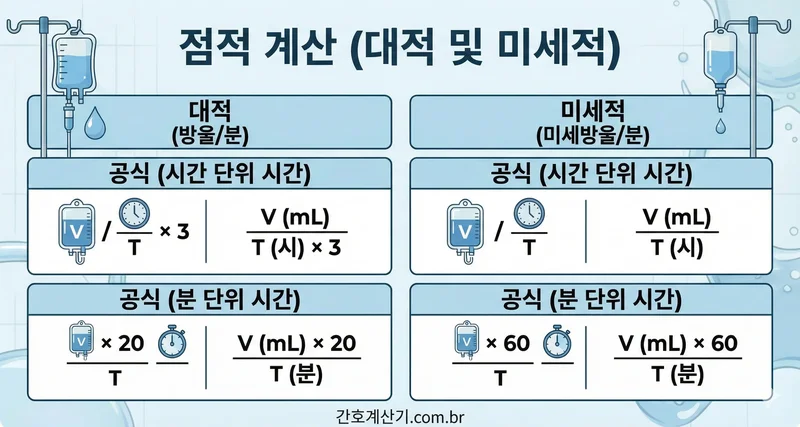

수액 주입 속도 계산기

계산하기 클릭
계산 공식
시간 단위 (시간):
- 방울/분 (gtt/min) = 용량 (ml) ÷ (시간 (h) × 3)
- 마이크로 방울/분 = 용량 (ml) ÷ 시간 (h)
시간 단위 (분):
- 방울/분 (gtt/min) = (용량 (ml) × 20) ÷ 시간 (분)
- 마이크로 방울/분 = (용량 (ml) × 60) ÷ 시간 (분)

아래 필드를 입력하여 주입 속도를 계산하세요:
계산하기 클릭
시간 단위 (시간):
시간 단위 (분):

참고 문헌:
Morris, D. G. (2014). Calculate with Confidence. 6th ed. St. Louis: Mosby.